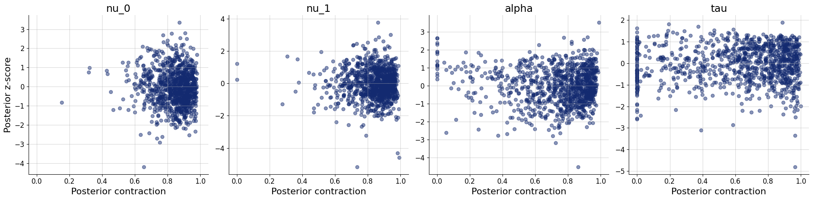

import os
os.environ["KERAS_BACKEND"] = "tensorflow"
import keras
import bayesflow as bf
import numpy as np
import pandas as pd
import matplotlib.pyplot as plt
from scipy import statsSimple response time (Wald model)
def evidence_accumulation(nu, max_t, dt):
timesteps = int(max_t / dt)
t = np.linspace(0, max_t, timesteps)
noise = np.random.normal(0, 1, size=timesteps) * np.sqrt(dt)
evidence = nu * t + np.cumsum(noise)
return t, evidence
t, evidence = evidence_accumulation(nu=2.5, max_t=1.0, dt=0.01)
plt.plot(t, evidence)
plt.xlabel("Time (s)")
plt.ylabel("Evidence")Text(0, 0.5, 'Evidence')
Here we will train a simple response time model based on a single accumulator that diffuses with a drift \(\nu\) to a decision threshold \(\alpha\). For more background about the Wald model, see Anders, Alario, & van Maanen (2016). Here we will estimate only the drift and decision threshold, no non-decision time or variability in starting point. In this case, the mean and a standard deviation of the response times are sufficient statistics, so we do not need a summary network.
def prior():
# drift rate
nu=np.random.gamma(shape=10, scale=0.25)
# decision threshold
alpha=np.random.gamma(shape=10, scale=0.1)
return dict(nu=nu, alpha=alpha)
# generate data for a single trial
def trial(nu, alpha, max_t, dt):
t, evidence = evidence_accumulation(nu, max_t, dt)
passage = np.argmax(evidence > alpha)
rt = max_t if passage==0 else t[passage]
return rt
# generate data for n trials
def likelihood(nu, alpha, n=250, max_t=3.0, dt=0.02):
rt = np.zeros(n)
for i in range(n):
rt[i] = trial(nu, alpha, max_t, dt)
return dict(rt=rt)
# sufficient statistics: mean, sd, n
def summary(rt):
return dict(
mean = np.mean(rt),
sd = np.std(rt)
)
simulator = bf.make_simulator([prior, likelihood, summary])df = simulator.sample(1_000)f=bf.diagnostics.pairs_samples(
df,
variable_keys=["nu", "alpha", "mean", "sd"],
variable_names=[r"$\nu$", r"$\alpha$", "mean RT", "sd RT"])
adapter = (bf.Adapter()
.constrain(["nu", "alpha"], lower=0)
.concatenate(["nu", "alpha"], into="inference_variables")
.concatenate(["mean", "sd"], into="inference_conditions")
.drop("rt")
)workflow = bf.BasicWorkflow(
simulator = simulator,
adapter = adapter,
inference_network = bf.networks.CouplingFlow(permutation="swap", subnet_kwargs=dict(dropout=False)),
inference_variables = ["nu", "alpha"],
inference_conditions = ["mean", "sd"]
)train_data = simulator.sample(5_000)
validation_data = simulator.sample(1_000)history=workflow.fit_offline(
data=train_data,
epochs=50,
batch_size=250,
validation_data=validation_data
)INFO:bayesflow:Fitting on dataset instance of OfflineDataset.
INFO:bayesflow:Building on a test batch.Epoch 1/50
20/20 ━━━━━━━━━━━━━━━━━━━━ 6s 29ms/step - loss: 4.2478 - loss/inference_loss: 4.2478 - val_loss: 3.2971 - val_loss/inference_loss: 3.2971
Epoch 2/50
20/20 ━━━━━━━━━━━━━━━━━━━━ 0s 10ms/step - loss: 2.9337 - loss/inference_loss: 2.9337 - val_loss: 2.6266 - val_loss/inference_loss: 2.6266
Epoch 3/50
20/20 ━━━━━━━━━━━━━━━━━━━━ 0s 9ms/step - loss: 2.5289 - loss/inference_loss: 2.5289 - val_loss: 2.4140 - val_loss/inference_loss: 2.4140
Epoch 4/50
20/20 ━━━━━━━━━━━━━━━━━━━━ 0s 9ms/step - loss: 2.3225 - loss/inference_loss: 2.3225 - val_loss: 2.1312 - val_loss/inference_loss: 2.1312
Epoch 5/50
20/20 ━━━━━━━━━━━━━━━━━━━━ 0s 10ms/step - loss: 2.1697 - loss/inference_loss: 2.1697 - val_loss: 1.9862 - val_loss/inference_loss: 1.9862
Epoch 6/50
20/20 ━━━━━━━━━━━━━━━━━━━━ 0s 12ms/step - loss: 1.9923 - loss/inference_loss: 1.9923 - val_loss: 1.9073 - val_loss/inference_loss: 1.9073
Epoch 7/50
20/20 ━━━━━━━━━━━━━━━━━━━━ 0s 12ms/step - loss: 1.7246 - loss/inference_loss: 1.7246 - val_loss: 1.4878 - val_loss/inference_loss: 1.4878
Epoch 8/50
20/20 ━━━━━━━━━━━━━━━━━━━━ 0s 12ms/step - loss: 1.2075 - loss/inference_loss: 1.2075 - val_loss: 0.6958 - val_loss/inference_loss: 0.6958
Epoch 9/50
20/20 ━━━━━━━━━━━━━━━━━━━━ 0s 12ms/step - loss: 0.4581 - loss/inference_loss: 0.4581 - val_loss: -0.1159 - val_loss/inference_loss: -0.1159
Epoch 10/50
20/20 ━━━━━━━━━━━━━━━━━━━━ 0s 12ms/step - loss: -0.3128 - loss/inference_loss: -0.3128 - val_loss: -0.5834 - val_loss/inference_loss: -0.5834
Epoch 11/50
20/20 ━━━━━━━━━━━━━━━━━━━━ 0s 12ms/step - loss: -0.7989 - loss/inference_loss: -0.7989 - val_loss: -1.0047 - val_loss/inference_loss: -1.0047
Epoch 12/50
20/20 ━━━━━━━━━━━━━━━━━━━━ 0s 12ms/step - loss: -0.9230 - loss/inference_loss: -0.9230 - val_loss: -0.8459 - val_loss/inference_loss: -0.8459
Epoch 13/50
20/20 ━━━━━━━━━━━━━━━━━━━━ 0s 12ms/step - loss: -0.9950 - loss/inference_loss: -0.9950 - val_loss: -1.1401 - val_loss/inference_loss: -1.1401
Epoch 14/50
20/20 ━━━━━━━━━━━━━━━━━━━━ 0s 12ms/step - loss: -1.1003 - loss/inference_loss: -1.1003 - val_loss: -1.3110 - val_loss/inference_loss: -1.3110
Epoch 15/50
20/20 ━━━━━━━━━━━━━━━━━━━━ 0s 13ms/step - loss: -1.1561 - loss/inference_loss: -1.1561 - val_loss: -1.3105 - val_loss/inference_loss: -1.3105
Epoch 16/50
20/20 ━━━━━━━━━━━━━━━━━━━━ 0s 14ms/step - loss: -1.1491 - loss/inference_loss: -1.1491 - val_loss: -1.2032 - val_loss/inference_loss: -1.2032
Epoch 17/50
20/20 ━━━━━━━━━━━━━━━━━━━━ 0s 13ms/step - loss: -1.1957 - loss/inference_loss: -1.1957 - val_loss: -1.3906 - val_loss/inference_loss: -1.3906
Epoch 18/50
20/20 ━━━━━━━━━━━━━━━━━━━━ 0s 13ms/step - loss: -1.2044 - loss/inference_loss: -1.2044 - val_loss: -1.2953 - val_loss/inference_loss: -1.2953
Epoch 19/50
20/20 ━━━━━━━━━━━━━━━━━━━━ 0s 12ms/step - loss: -1.2114 - loss/inference_loss: -1.2114 - val_loss: -1.2180 - val_loss/inference_loss: -1.2180
Epoch 20/50
20/20 ━━━━━━━━━━━━━━━━━━━━ 0s 12ms/step - loss: -1.2200 - loss/inference_loss: -1.2200 - val_loss: -1.1664 - val_loss/inference_loss: -1.1664
Epoch 21/50
20/20 ━━━━━━━━━━━━━━━━━━━━ 0s 13ms/step - loss: -1.2478 - loss/inference_loss: -1.2478 - val_loss: -1.3229 - val_loss/inference_loss: -1.3229
Epoch 22/50
20/20 ━━━━━━━━━━━━━━━━━━━━ 0s 12ms/step - loss: -1.2740 - loss/inference_loss: -1.2740 - val_loss: -1.2695 - val_loss/inference_loss: -1.2695
Epoch 23/50
20/20 ━━━━━━━━━━━━━━━━━━━━ 0s 13ms/step - loss: -1.2877 - loss/inference_loss: -1.2877 - val_loss: -1.2807 - val_loss/inference_loss: -1.2807
Epoch 24/50
20/20 ━━━━━━━━━━━━━━━━━━━━ 0s 13ms/step - loss: -1.3179 - loss/inference_loss: -1.3179 - val_loss: -1.2797 - val_loss/inference_loss: -1.2797
Epoch 25/50
20/20 ━━━━━━━━━━━━━━━━━━━━ 0s 12ms/step - loss: -1.3272 - loss/inference_loss: -1.3272 - val_loss: -1.3961 - val_loss/inference_loss: -1.3961
Epoch 26/50
20/20 ━━━━━━━━━━━━━━━━━━━━ 0s 13ms/step - loss: -1.3455 - loss/inference_loss: -1.3455 - val_loss: -1.2804 - val_loss/inference_loss: -1.2804
Epoch 27/50
20/20 ━━━━━━━━━━━━━━━━━━━━ 0s 12ms/step - loss: -1.3473 - loss/inference_loss: -1.3473 - val_loss: -1.4438 - val_loss/inference_loss: -1.4438
Epoch 28/50
20/20 ━━━━━━━━━━━━━━━━━━━━ 0s 13ms/step - loss: -1.3510 - loss/inference_loss: -1.3510 - val_loss: -1.4510 - val_loss/inference_loss: -1.4510
Epoch 29/50
20/20 ━━━━━━━━━━━━━━━━━━━━ 0s 12ms/step - loss: -1.3552 - loss/inference_loss: -1.3552 - val_loss: -1.4723 - val_loss/inference_loss: -1.4723
Epoch 30/50
20/20 ━━━━━━━━━━━━━━━━━━━━ 0s 12ms/step - loss: -1.3745 - loss/inference_loss: -1.3745 - val_loss: -1.3275 - val_loss/inference_loss: -1.3275
Epoch 31/50
20/20 ━━━━━━━━━━━━━━━━━━━━ 0s 15ms/step - loss: -1.3644 - loss/inference_loss: -1.3644 - val_loss: -1.3631 - val_loss/inference_loss: -1.3631
Epoch 32/50
20/20 ━━━━━━━━━━━━━━━━━━━━ 0s 12ms/step - loss: -1.3738 - loss/inference_loss: -1.3738 - val_loss: -1.4041 - val_loss/inference_loss: -1.4041
Epoch 33/50
20/20 ━━━━━━━━━━━━━━━━━━━━ 0s 12ms/step - loss: -1.3902 - loss/inference_loss: -1.3902 - val_loss: -1.5244 - val_loss/inference_loss: -1.5244
Epoch 34/50
20/20 ━━━━━━━━━━━━━━━━━━━━ 0s 13ms/step - loss: -1.3940 - loss/inference_loss: -1.3940 - val_loss: -1.4587 - val_loss/inference_loss: -1.4587
Epoch 35/50
20/20 ━━━━━━━━━━━━━━━━━━━━ 0s 13ms/step - loss: -1.3896 - loss/inference_loss: -1.3896 - val_loss: -1.4295 - val_loss/inference_loss: -1.4295
Epoch 36/50
20/20 ━━━━━━━━━━━━━━━━━━━━ 0s 12ms/step - loss: -1.3862 - loss/inference_loss: -1.3862 - val_loss: -1.4016 - val_loss/inference_loss: -1.4016
Epoch 37/50
20/20 ━━━━━━━━━━━━━━━━━━━━ 0s 14ms/step - loss: -1.3927 - loss/inference_loss: -1.3927 - val_loss: -1.3490 - val_loss/inference_loss: -1.3490
Epoch 38/50
20/20 ━━━━━━━━━━━━━━━━━━━━ 0s 13ms/step - loss: -1.3859 - loss/inference_loss: -1.3859 - val_loss: -1.4767 - val_loss/inference_loss: -1.4767
Epoch 39/50
20/20 ━━━━━━━━━━━━━━━━━━━━ 0s 12ms/step - loss: -1.4036 - loss/inference_loss: -1.4036 - val_loss: -1.4122 - val_loss/inference_loss: -1.4122
Epoch 40/50
20/20 ━━━━━━━━━━━━━━━━━━━━ 0s 12ms/step - loss: -1.4002 - loss/inference_loss: -1.4002 - val_loss: -1.4689 - val_loss/inference_loss: -1.4689
Epoch 41/50
20/20 ━━━━━━━━━━━━━━━━━━━━ 0s 12ms/step - loss: -1.4084 - loss/inference_loss: -1.4084 - val_loss: -1.5304 - val_loss/inference_loss: -1.5304
Epoch 42/50
20/20 ━━━━━━━━━━━━━━━━━━━━ 0s 13ms/step - loss: -1.4136 - loss/inference_loss: -1.4136 - val_loss: -1.4460 - val_loss/inference_loss: -1.4460
Epoch 43/50
20/20 ━━━━━━━━━━━━━━━━━━━━ 0s 13ms/step - loss: -1.4095 - loss/inference_loss: -1.4095 - val_loss: -1.5936 - val_loss/inference_loss: -1.5936
Epoch 44/50
20/20 ━━━━━━━━━━━━━━━━━━━━ 0s 12ms/step - loss: -1.4165 - loss/inference_loss: -1.4165 - val_loss: -1.3300 - val_loss/inference_loss: -1.3300
Epoch 45/50
20/20 ━━━━━━━━━━━━━━━━━━━━ 0s 12ms/step - loss: -1.4092 - loss/inference_loss: -1.4092 - val_loss: -1.4554 - val_loss/inference_loss: -1.4554
Epoch 46/50
20/20 ━━━━━━━━━━━━━━━━━━━━ 0s 12ms/step - loss: -1.4121 - loss/inference_loss: -1.4121 - val_loss: -1.4771 - val_loss/inference_loss: -1.4771
Epoch 47/50
20/20 ━━━━━━━━━━━━━━━━━━━━ 0s 12ms/step - loss: -1.4165 - loss/inference_loss: -1.4165 - val_loss: -1.3761 - val_loss/inference_loss: -1.3761
Epoch 48/50
20/20 ━━━━━━━━━━━━━━━━━━━━ 0s 12ms/step - loss: -1.4188 - loss/inference_loss: -1.4188 - val_loss: -1.4687 - val_loss/inference_loss: -1.4687
Epoch 49/50
20/20 ━━━━━━━━━━━━━━━━━━━━ 0s 13ms/step - loss: -1.4108 - loss/inference_loss: -1.4108 - val_loss: -1.4455 - val_loss/inference_loss: -1.4455
Epoch 50/50
20/20 ━━━━━━━━━━━━━━━━━━━━ 0s 12ms/step - loss: -1.4162 - loss/inference_loss: -1.4162 - val_loss: -1.4218 - val_loss/inference_loss: -1.4218test_data = simulator.sample(1_000)
plots=workflow.plot_default_diagnostics(test_data=test_data)

Two choice task (Racing diffusion model)
We’ll assume a simple RDM with two choice alternatives (Tillman et al., 2020).
Here we will simplify the model to include no bias, no variability in starting points. Instead of modeling one accumulator for each of [left, right] responses, we will simply model one accumulator for “incorrect” and one accumulator for “correct” response. This makes it a bit easier to simulate from (we do not need to simulate stimuli).
The model has four parameters: 2 drift rates (incorrect - \(\nu_0\), correct \(\nu_1\)), decision threshold \(\alpha\), and non-decision time \(\tau\).
def context(n=None):
if n is None:
n = np.random.randint(200, 351)
return dict(n=n)
def prior(nu=None, alpha=None, tau=None):
if nu is None:
nu=np.random.dirichlet([2, 2])
nu=np.random.gamma(shape=5, scale=0.5) * nu
if alpha is None:
alpha=np.random.gamma(shape=5, scale=0.2)
if tau is None:
tau=np.random.exponential(0.15)
return dict(nu=nu, alpha=alpha, tau=tau)
# generate data for a single trial
def trial(nu, alpha, tau, max_t, dt):
response = -1
min_t = max_t
# loop over accumulators
# if an accumulator has a smaller passage time than the current minimum
# save it as the fastest accumulator (response)
for resp, drift in enumerate(nu):
t, evidence = evidence_accumulation(drift, max_t, dt)
passage = np.argmax(evidence > alpha)
t = max_t if passage==0 else t[passage]
if t < min_t:
min_t = t
response = resp
return min_t+tau, response
# generate data for n trials
# keep the data.shape always to max_n
# the rest is filled with 0s
def likelihood(n, nu, alpha, tau, max_t=3.0, dt=0.02, max_n=350):
rt = np.zeros(max_n)
response = np.zeros(max_n)
observed = np.zeros(max_n)
for i in range(n):
result = trial(nu, alpha, tau, max_t, dt)
rt[i] = result[0]
response[i] = result[1]
observed[i] = 1
return dict(rt=rt, response=response, observed=observed)
simulator = bf.make_simulator([context, prior, likelihood])adapter = (bf.Adapter()
.as_set(["rt", "response", "observed"])
.constrain(["nu", "alpha", "tau"], lower=0)
.standardize(include="nu", mean= 0.7, std=1.2)
.standardize(include="alpha", mean= 0.5, std=0.7)
.standardize(include="tau", mean=-2.5, std=1.3)
.concatenate(["nu", "alpha", "tau"], into="inference_variables")
.concatenate(["rt", "response", "observed"], into="summary_variables")
.rename("n", "inference_conditions")
)workflow = bf.BasicWorkflow(
simulator = simulator,
adapter = adapter,
inference_network = bf.networks.CouplingFlow(
permutation="swap",
subnet_kwargs=dict(dropout=False)
),
summary_network=bf.networks.DeepSet(
base_distribution="normal",
dropout=False
),
inference_variables = ["nu", "alpha", "tau"],
inference_conditions = ["n"],
summary_variables = ["rt", "response", "observed"]
)train_data = simulator.sample(5_000)
validation_data = simulator.sample(1_000)history=workflow.fit_offline(
data=train_data,
epochs=100,
batch_size=250,
validation_data=validation_data
)INFO:bayesflow:Fitting on dataset instance of OfflineDataset.
INFO:bayesflow:Building on a test batch.Epoch 1/100
20/20 ━━━━━━━━━━━━━━━━━━━━ 21s 570ms/step - loss: 20.9708 - loss/inference_loss: 20.6212 - loss/summary_loss: 0.3496 - val_loss: 6.4583 - val_loss/inference_loss: 6.3037 - val_loss/summary_loss: 0.1545
Epoch 2/100
20/20 ━━━━━━━━━━━━━━━━━━━━ 11s 536ms/step - loss: 5.9631 - loss/inference_loss: 5.8166 - loss/summary_loss: 0.1465 - val_loss: 5.5611 - val_loss/inference_loss: 5.3896 - val_loss/summary_loss: 0.1715
Epoch 3/100
20/20 ━━━━━━━━━━━━━━━━━━━━ 11s 549ms/step - loss: 5.3252 - loss/inference_loss: 5.1295 - loss/summary_loss: 0.1957 - val_loss: 5.2970 - val_loss/inference_loss: 5.0639 - val_loss/summary_loss: 0.2331
Epoch 4/100
20/20 ━━━━━━━━━━━━━━━━━━━━ 11s 553ms/step - loss: 4.7897 - loss/inference_loss: 4.6077 - loss/summary_loss: 0.1820 - val_loss: 4.8683 - val_loss/inference_loss: 4.6740 - val_loss/summary_loss: 0.1943
Epoch 5/100
20/20 ━━━━━━━━━━━━━━━━━━━━ 12s 581ms/step - loss: 4.4792 - loss/inference_loss: 4.3138 - loss/summary_loss: 0.1654 - val_loss: 4.7738 - val_loss/inference_loss: 4.6027 - val_loss/summary_loss: 0.1711
Epoch 6/100
20/20 ━━━━━━━━━━━━━━━━━━━━ 11s 554ms/step - loss: 4.3321 - loss/inference_loss: 4.1743 - loss/summary_loss: 0.1578 - val_loss: 4.7285 - val_loss/inference_loss: 4.5732 - val_loss/summary_loss: 0.1553
Epoch 7/100
20/20 ━━━━━━━━━━━━━━━━━━━━ 12s 585ms/step - loss: 4.5421 - loss/inference_loss: 4.3665 - loss/summary_loss: 0.1756 - val_loss: 4.1935 - val_loss/inference_loss: 3.9998 - val_loss/summary_loss: 0.1937
Epoch 8/100
20/20 ━━━━━━━━━━━━━━━━━━━━ 11s 572ms/step - loss: 4.2988 - loss/inference_loss: 4.1162 - loss/summary_loss: 0.1826 - val_loss: 4.1436 - val_loss/inference_loss: 3.9832 - val_loss/summary_loss: 0.1604
Epoch 9/100
20/20 ━━━━━━━━━━━━━━━━━━━━ 11s 572ms/step - loss: 3.9947 - loss/inference_loss: 3.8410 - loss/summary_loss: 0.1537 - val_loss: 3.8679 - val_loss/inference_loss: 3.6978 - val_loss/summary_loss: 0.1701
Epoch 10/100
20/20 ━━━━━━━━━━━━━━━━━━━━ 11s 565ms/step - loss: 3.8380 - loss/inference_loss: 3.6859 - loss/summary_loss: 0.1521 - val_loss: 3.7873 - val_loss/inference_loss: 3.6242 - val_loss/summary_loss: 0.1631
Epoch 11/100
20/20 ━━━━━━━━━━━━━━━━━━━━ 11s 568ms/step - loss: 3.9673 - loss/inference_loss: 3.8106 - loss/summary_loss: 0.1567 - val_loss: 3.6799 - val_loss/inference_loss: 3.5074 - val_loss/summary_loss: 0.1725
Epoch 12/100
20/20 ━━━━━━━━━━━━━━━━━━━━ 11s 571ms/step - loss: 4.0578 - loss/inference_loss: 3.8796 - loss/summary_loss: 0.1782 - val_loss: 3.7456 - val_loss/inference_loss: 3.5423 - val_loss/summary_loss: 0.2033
Epoch 13/100
20/20 ━━━━━━━━━━━━━━━━━━━━ 11s 566ms/step - loss: 3.6058 - loss/inference_loss: 3.4265 - loss/summary_loss: 0.1794 - val_loss: 3.3420 - val_loss/inference_loss: 3.1763 - val_loss/summary_loss: 0.1657
Epoch 14/100
20/20 ━━━━━━━━━━━━━━━━━━━━ 11s 568ms/step - loss: 3.4954 - loss/inference_loss: 3.3371 - loss/summary_loss: 0.1583 - val_loss: 3.8457 - val_loss/inference_loss: 3.6819 - val_loss/summary_loss: 0.1638
Epoch 15/100
20/20 ━━━━━━━━━━━━━━━━━━━━ 11s 569ms/step - loss: 3.5513 - loss/inference_loss: 3.3970 - loss/summary_loss: 0.1543 - val_loss: 3.9955 - val_loss/inference_loss: 3.8269 - val_loss/summary_loss: 0.1686
Epoch 16/100
20/20 ━━━━━━━━━━━━━━━━━━━━ 12s 579ms/step - loss: 3.4844 - loss/inference_loss: 3.3220 - loss/summary_loss: 0.1624 - val_loss: 3.5121 - val_loss/inference_loss: 3.3520 - val_loss/summary_loss: 0.1601
Epoch 17/100
20/20 ━━━━━━━━━━━━━━━━━━━━ 12s 578ms/step - loss: 3.2603 - loss/inference_loss: 3.1055 - loss/summary_loss: 0.1548 - val_loss: 3.3735 - val_loss/inference_loss: 3.2034 - val_loss/summary_loss: 0.1702
Epoch 18/100
20/20 ━━━━━━━━━━━━━━━━━━━━ 12s 586ms/step - loss: 3.0964 - loss/inference_loss: 2.9365 - loss/summary_loss: 0.1599 - val_loss: 3.5813 - val_loss/inference_loss: 3.4131 - val_loss/summary_loss: 0.1682
Epoch 19/100
20/20 ━━━━━━━━━━━━━━━━━━━━ 11s 568ms/step - loss: 2.9846 - loss/inference_loss: 2.8216 - loss/summary_loss: 0.1629 - val_loss: 2.9246 - val_loss/inference_loss: 2.7537 - val_loss/summary_loss: 0.1709
Epoch 20/100
20/20 ━━━━━━━━━━━━━━━━━━━━ 11s 546ms/step - loss: 2.9375 - loss/inference_loss: 2.7749 - loss/summary_loss: 0.1626 - val_loss: 2.8463 - val_loss/inference_loss: 2.6795 - val_loss/summary_loss: 0.1668
Epoch 21/100
20/20 ━━━━━━━━━━━━━━━━━━━━ 11s 558ms/step - loss: 2.8605 - loss/inference_loss: 2.6985 - loss/summary_loss: 0.1620 - val_loss: 2.5638 - val_loss/inference_loss: 2.3841 - val_loss/summary_loss: 0.1796
Epoch 22/100
20/20 ━━━━━━━━━━━━━━━━━━━━ 11s 577ms/step - loss: 2.8183 - loss/inference_loss: 2.6561 - loss/summary_loss: 0.1622 - val_loss: 3.1124 - val_loss/inference_loss: 2.9541 - val_loss/summary_loss: 0.1583
Epoch 23/100
20/20 ━━━━━━━━━━━━━━━━━━━━ 11s 573ms/step - loss: 2.7191 - loss/inference_loss: 2.5615 - loss/summary_loss: 0.1575 - val_loss: 2.6894 - val_loss/inference_loss: 2.5268 - val_loss/summary_loss: 0.1626
Epoch 24/100
20/20 ━━━━━━━━━━━━━━━━━━━━ 12s 577ms/step - loss: 2.6972 - loss/inference_loss: 2.5380 - loss/summary_loss: 0.1593 - val_loss: 2.8283 - val_loss/inference_loss: 2.6653 - val_loss/summary_loss: 0.1629
Epoch 25/100
20/20 ━━━━━━━━━━━━━━━━━━━━ 11s 573ms/step - loss: 2.6366 - loss/inference_loss: 2.4786 - loss/summary_loss: 0.1580 - val_loss: 2.4028 - val_loss/inference_loss: 2.2342 - val_loss/summary_loss: 0.1686
Epoch 26/100
20/20 ━━━━━━━━━━━━━━━━━━━━ 12s 584ms/step - loss: 2.5273 - loss/inference_loss: 2.3641 - loss/summary_loss: 0.1631 - val_loss: 3.2753 - val_loss/inference_loss: 3.1085 - val_loss/summary_loss: 0.1669
Epoch 27/100
20/20 ━━━━━━━━━━━━━━━━━━━━ 11s 552ms/step - loss: 2.5849 - loss/inference_loss: 2.4246 - loss/summary_loss: 0.1604 - val_loss: 2.7328 - val_loss/inference_loss: 2.5645 - val_loss/summary_loss: 0.1684
Epoch 28/100
20/20 ━━━━━━━━━━━━━━━━━━━━ 11s 544ms/step - loss: 2.4469 - loss/inference_loss: 2.2853 - loss/summary_loss: 0.1616 - val_loss: 2.4741 - val_loss/inference_loss: 2.3143 - val_loss/summary_loss: 0.1597
Epoch 29/100
20/20 ━━━━━━━━━━━━━━━━━━━━ 11s 544ms/step - loss: 2.3149 - loss/inference_loss: 2.1566 - loss/summary_loss: 0.1584 - val_loss: 2.0014 - val_loss/inference_loss: 1.8472 - val_loss/summary_loss: 0.1542
Epoch 30/100
20/20 ━━━━━━━━━━━━━━━━━━━━ 11s 545ms/step - loss: 2.3523 - loss/inference_loss: 2.1965 - loss/summary_loss: 0.1558 - val_loss: 2.6232 - val_loss/inference_loss: 2.4516 - val_loss/summary_loss: 0.1716
Epoch 31/100
20/20 ━━━━━━━━━━━━━━━━━━━━ 11s 543ms/step - loss: 2.3384 - loss/inference_loss: 2.1854 - loss/summary_loss: 0.1530 - val_loss: 2.3379 - val_loss/inference_loss: 2.1691 - val_loss/summary_loss: 0.1688
Epoch 32/100
20/20 ━━━━━━━━━━━━━━━━━━━━ 11s 550ms/step - loss: 2.2515 - loss/inference_loss: 2.0954 - loss/summary_loss: 0.1561 - val_loss: 2.3814 - val_loss/inference_loss: 2.2284 - val_loss/summary_loss: 0.1530
Epoch 33/100
20/20 ━━━━━━━━━━━━━━━━━━━━ 11s 541ms/step - loss: 2.1215 - loss/inference_loss: 1.9579 - loss/summary_loss: 0.1636 - val_loss: 2.0887 - val_loss/inference_loss: 1.9297 - val_loss/summary_loss: 0.1590
Epoch 34/100
20/20 ━━━━━━━━━━━━━━━━━━━━ 11s 540ms/step - loss: 2.1897 - loss/inference_loss: 2.0323 - loss/summary_loss: 0.1574 - val_loss: 2.4066 - val_loss/inference_loss: 2.2340 - val_loss/summary_loss: 0.1725
Epoch 35/100
20/20 ━━━━━━━━━━━━━━━━━━━━ 12s 584ms/step - loss: 1.8850 - loss/inference_loss: 1.7289 - loss/summary_loss: 0.1561 - val_loss: 1.6007 - val_loss/inference_loss: 1.4405 - val_loss/summary_loss: 0.1602
Epoch 36/100
20/20 ━━━━━━━━━━━━━━━━━━━━ 11s 566ms/step - loss: 1.7409 - loss/inference_loss: 1.5707 - loss/summary_loss: 0.1701 - val_loss: 1.8780 - val_loss/inference_loss: 1.7130 - val_loss/summary_loss: 0.1650
Epoch 37/100
20/20 ━━━━━━━━━━━━━━━━━━━━ 11s 570ms/step - loss: 2.3168 - loss/inference_loss: 2.1430 - loss/summary_loss: 0.1738 - val_loss: 1.8696 - val_loss/inference_loss: 1.7035 - val_loss/summary_loss: 0.1660
Epoch 38/100
20/20 ━━━━━━━━━━━━━━━━━━━━ 11s 567ms/step - loss: 1.6114 - loss/inference_loss: 1.4466 - loss/summary_loss: 0.1649 - val_loss: 1.2581 - val_loss/inference_loss: 1.0754 - val_loss/summary_loss: 0.1827
Epoch 39/100
20/20 ━━━━━━━━━━━━━━━━━━━━ 12s 580ms/step - loss: 1.5048 - loss/inference_loss: 1.3375 - loss/summary_loss: 0.1673 - val_loss: 1.6852 - val_loss/inference_loss: 1.5086 - val_loss/summary_loss: 0.1766
Epoch 40/100
20/20 ━━━━━━━━━━━━━━━━━━━━ 11s 568ms/step - loss: 1.3536 - loss/inference_loss: 1.1865 - loss/summary_loss: 0.1670 - val_loss: 1.7820 - val_loss/inference_loss: 1.6051 - val_loss/summary_loss: 0.1769
Epoch 41/100
20/20 ━━━━━━━━━━━━━━━━━━━━ 12s 580ms/step - loss: 1.6882 - loss/inference_loss: 1.5211 - loss/summary_loss: 0.1671 - val_loss: 2.0654 - val_loss/inference_loss: 1.8773 - val_loss/summary_loss: 0.1880
Epoch 42/100
20/20 ━━━━━━━━━━━━━━━━━━━━ 12s 597ms/step - loss: 1.4865 - loss/inference_loss: 1.2806 - loss/summary_loss: 0.2059 - val_loss: 1.4813 - val_loss/inference_loss: 1.2312 - val_loss/summary_loss: 0.2501
Epoch 43/100
20/20 ━━━━━━━━━━━━━━━━━━━━ 11s 567ms/step - loss: 1.2900 - loss/inference_loss: 1.0658 - loss/summary_loss: 0.2242 - val_loss: 1.0590 - val_loss/inference_loss: 0.8564 - val_loss/summary_loss: 0.2026
Epoch 44/100
20/20 ━━━━━━━━━━━━━━━━━━━━ 11s 549ms/step - loss: 1.0724 - loss/inference_loss: 0.8845 - loss/summary_loss: 0.1879 - val_loss: 1.6218 - val_loss/inference_loss: 1.4355 - val_loss/summary_loss: 0.1862
Epoch 45/100
20/20 ━━━━━━━━━━━━━━━━━━━━ 12s 593ms/step - loss: 1.2824 - loss/inference_loss: 1.0915 - loss/summary_loss: 0.1908 - val_loss: 1.2253 - val_loss/inference_loss: 1.0222 - val_loss/summary_loss: 0.2031
Epoch 46/100
20/20 ━━━━━━━━━━━━━━━━━━━━ 12s 580ms/step - loss: 1.0173 - loss/inference_loss: 0.8328 - loss/summary_loss: 0.1845 - val_loss: 1.2865 - val_loss/inference_loss: 1.0725 - val_loss/summary_loss: 0.2140
Epoch 47/100
20/20 ━━━━━━━━━━━━━━━━━━━━ 11s 565ms/step - loss: 1.1920 - loss/inference_loss: 1.0173 - loss/summary_loss: 0.1747 - val_loss: 0.6424 - val_loss/inference_loss: 0.4737 - val_loss/summary_loss: 0.1688
Epoch 48/100
20/20 ━━━━━━━━━━━━━━━━━━━━ 11s 546ms/step - loss: 0.9623 - loss/inference_loss: 0.7910 - loss/summary_loss: 0.1713 - val_loss: 0.9176 - val_loss/inference_loss: 0.7322 - val_loss/summary_loss: 0.1853
Epoch 49/100
20/20 ━━━━━━━━━━━━━━━━━━━━ 11s 543ms/step - loss: 0.8234 - loss/inference_loss: 0.6522 - loss/summary_loss: 0.1712 - val_loss: 0.5328 - val_loss/inference_loss: 0.3686 - val_loss/summary_loss: 0.1641
Epoch 50/100
20/20 ━━━━━━━━━━━━━━━━━━━━ 11s 540ms/step - loss: 0.7788 - loss/inference_loss: 0.6058 - loss/summary_loss: 0.1730 - val_loss: 1.4526 - val_loss/inference_loss: 1.2618 - val_loss/summary_loss: 0.1908
Epoch 51/100
20/20 ━━━━━━━━━━━━━━━━━━━━ 11s 542ms/step - loss: 1.0559 - loss/inference_loss: 0.8846 - loss/summary_loss: 0.1712 - val_loss: 1.0322 - val_loss/inference_loss: 0.8620 - val_loss/summary_loss: 0.1703
Epoch 52/100
20/20 ━━━━━━━━━━━━━━━━━━━━ 11s 541ms/step - loss: 0.9098 - loss/inference_loss: 0.7380 - loss/summary_loss: 0.1719 - val_loss: 0.6960 - val_loss/inference_loss: 0.5214 - val_loss/summary_loss: 0.1746
Epoch 53/100
20/20 ━━━━━━━━━━━━━━━━━━━━ 11s 549ms/step - loss: 0.7205 - loss/inference_loss: 0.5472 - loss/summary_loss: 0.1733 - val_loss: 0.6936 - val_loss/inference_loss: 0.5190 - val_loss/summary_loss: 0.1746
Epoch 54/100
20/20 ━━━━━━━━━━━━━━━━━━━━ 11s 542ms/step - loss: 0.5575 - loss/inference_loss: 0.3812 - loss/summary_loss: 0.1764 - val_loss: 0.2826 - val_loss/inference_loss: 0.1146 - val_loss/summary_loss: 0.1680
Epoch 55/100
20/20 ━━━━━━━━━━━━━━━━━━━━ 11s 541ms/step - loss: 0.5075 - loss/inference_loss: 0.3318 - loss/summary_loss: 0.1758 - val_loss: 0.4397 - val_loss/inference_loss: 0.2523 - val_loss/summary_loss: 0.1874
Epoch 56/100
20/20 ━━━━━━━━━━━━━━━━━━━━ 11s 547ms/step - loss: 0.5964 - loss/inference_loss: 0.4199 - loss/summary_loss: 0.1766 - val_loss: 0.5362 - val_loss/inference_loss: 0.3637 - val_loss/summary_loss: 0.1725
Epoch 57/100
20/20 ━━━━━━━━━━━━━━━━━━━━ 11s 547ms/step - loss: 0.9508 - loss/inference_loss: 0.7791 - loss/summary_loss: 0.1717 - val_loss: 0.6182 - val_loss/inference_loss: 0.4515 - val_loss/summary_loss: 0.1667
Epoch 58/100
20/20 ━━━━━━━━━━━━━━━━━━━━ 11s 542ms/step - loss: 0.5039 - loss/inference_loss: 0.3291 - loss/summary_loss: 0.1748 - val_loss: 0.2156 - val_loss/inference_loss: 0.0316 - val_loss/summary_loss: 0.1840
Epoch 59/100
20/20 ━━━━━━━━━━━━━━━━━━━━ 11s 542ms/step - loss: 0.6430 - loss/inference_loss: 0.4713 - loss/summary_loss: 0.1717 - val_loss: 0.4248 - val_loss/inference_loss: 0.2376 - val_loss/summary_loss: 0.1872
Epoch 60/100
20/20 ━━━━━━━━━━━━━━━━━━━━ 11s 542ms/step - loss: 0.4375 - loss/inference_loss: 0.2643 - loss/summary_loss: 0.1731 - val_loss: 0.5216 - val_loss/inference_loss: 0.3502 - val_loss/summary_loss: 0.1714
Epoch 61/100
20/20 ━━━━━━━━━━━━━━━━━━━━ 11s 554ms/step - loss: 0.5149 - loss/inference_loss: 0.3437 - loss/summary_loss: 0.1711 - val_loss: 0.6297 - val_loss/inference_loss: 0.4741 - val_loss/summary_loss: 0.1556
Epoch 62/100
20/20 ━━━━━━━━━━━━━━━━━━━━ 11s 550ms/step - loss: 0.3302 - loss/inference_loss: 0.1708 - loss/summary_loss: 0.1594 - val_loss: 0.3909 - val_loss/inference_loss: 0.2277 - val_loss/summary_loss: 0.1632
Epoch 63/100
20/20 ━━━━━━━━━━━━━━━━━━━━ 11s 546ms/step - loss: 0.3983 - loss/inference_loss: 0.2339 - loss/summary_loss: 0.1643 - val_loss: 0.5141 - val_loss/inference_loss: 0.3284 - val_loss/summary_loss: 0.1857
Epoch 64/100
20/20 ━━━━━━━━━━━━━━━━━━━━ 11s 549ms/step - loss: 0.2731 - loss/inference_loss: 0.1049 - loss/summary_loss: 0.1681 - val_loss: 0.1909 - val_loss/inference_loss: 0.0234 - val_loss/summary_loss: 0.1675
Epoch 65/100
20/20 ━━━━━━━━━━━━━━━━━━━━ 11s 546ms/step - loss: 0.2533 - loss/inference_loss: 0.0882 - loss/summary_loss: 0.1651 - val_loss: 0.3606 - val_loss/inference_loss: 0.1868 - val_loss/summary_loss: 0.1737
Epoch 66/100
20/20 ━━━━━━━━━━━━━━━━━━━━ 11s 544ms/step - loss: 0.2249 - loss/inference_loss: 0.0612 - loss/summary_loss: 0.1637 - val_loss: 0.6684 - val_loss/inference_loss: 0.5002 - val_loss/summary_loss: 0.1682
Epoch 67/100
20/20 ━━━━━━━━━━━━━━━━━━━━ 11s 544ms/step - loss: 0.2323 - loss/inference_loss: 0.0717 - loss/summary_loss: 0.1605 - val_loss: 0.2420 - val_loss/inference_loss: 0.0885 - val_loss/summary_loss: 0.1535
Epoch 68/100
20/20 ━━━━━━━━━━━━━━━━━━━━ 11s 545ms/step - loss: 0.1380 - loss/inference_loss: -0.0215 - loss/summary_loss: 0.1595 - val_loss: -0.1493 - val_loss/inference_loss: -0.3209 - val_loss/summary_loss: 0.1715
Epoch 69/100
20/20 ━━━━━━━━━━━━━━━━━━━━ 11s 547ms/step - loss: 0.1005 - loss/inference_loss: -0.0615 - loss/summary_loss: 0.1620 - val_loss: 0.2482 - val_loss/inference_loss: 0.0915 - val_loss/summary_loss: 0.1567
Epoch 70/100
20/20 ━━━━━━━━━━━━━━━━━━━━ 11s 553ms/step - loss: 0.1835 - loss/inference_loss: 0.0197 - loss/summary_loss: 0.1638 - val_loss: 0.4854 - val_loss/inference_loss: 0.3127 - val_loss/summary_loss: 0.1727
Epoch 71/100
20/20 ━━━━━━━━━━━━━━━━━━━━ 11s 547ms/step - loss: 0.1100 - loss/inference_loss: -0.0533 - loss/summary_loss: 0.1633 - val_loss: 0.2090 - val_loss/inference_loss: 0.0429 - val_loss/summary_loss: 0.1661
Epoch 72/100
20/20 ━━━━━━━━━━━━━━━━━━━━ 11s 560ms/step - loss: 0.0443 - loss/inference_loss: -0.1226 - loss/summary_loss: 0.1669 - val_loss: 0.1434 - val_loss/inference_loss: -0.0256 - val_loss/summary_loss: 0.1690
Epoch 73/100
20/20 ━━━━━━━━━━━━━━━━━━━━ 11s 554ms/step - loss: 0.0536 - loss/inference_loss: -0.1134 - loss/summary_loss: 0.1670 - val_loss: 0.1843 - val_loss/inference_loss: 0.0194 - val_loss/summary_loss: 0.1649
Epoch 74/100
20/20 ━━━━━━━━━━━━━━━━━━━━ 11s 545ms/step - loss: 0.0409 - loss/inference_loss: -0.1268 - loss/summary_loss: 0.1677 - val_loss: 0.1043 - val_loss/inference_loss: -0.0714 - val_loss/summary_loss: 0.1758
Epoch 75/100
20/20 ━━━━━━━━━━━━━━━━━━━━ 11s 547ms/step - loss: 0.0519 - loss/inference_loss: -0.1139 - loss/summary_loss: 0.1659 - val_loss: 0.2015 - val_loss/inference_loss: 0.0364 - val_loss/summary_loss: 0.1651
Epoch 76/100
20/20 ━━━━━━━━━━━━━━━━━━━━ 11s 550ms/step - loss: -9.3351e-04 - loss/inference_loss: -0.1657 - loss/summary_loss: 0.1648 - val_loss: 0.1912 - val_loss/inference_loss: -0.0046 - val_loss/summary_loss: 0.1958
Epoch 77/100
20/20 ━━━━━━━━━━━━━━━━━━━━ 11s 546ms/step - loss: -0.0163 - loss/inference_loss: -0.1815 - loss/summary_loss: 0.1652 - val_loss: 0.0029 - val_loss/inference_loss: -0.1616 - val_loss/summary_loss: 0.1646
Epoch 78/100
20/20 ━━━━━━━━━━━━━━━━━━━━ 11s 546ms/step - loss: -0.0676 - loss/inference_loss: -0.2336 - loss/summary_loss: 0.1660 - val_loss: 0.0314 - val_loss/inference_loss: -0.1420 - val_loss/summary_loss: 0.1734
Epoch 79/100
20/20 ━━━━━━━━━━━━━━━━━━━━ 11s 545ms/step - loss: -0.1293 - loss/inference_loss: -0.2922 - loss/summary_loss: 0.1628 - val_loss: -0.0265 - val_loss/inference_loss: -0.1853 - val_loss/summary_loss: 0.1588
Epoch 80/100
20/20 ━━━━━━━━━━━━━━━━━━━━ 11s 548ms/step - loss: -0.1306 - loss/inference_loss: -0.2919 - loss/summary_loss: 0.1613 - val_loss: -0.1537 - val_loss/inference_loss: -0.3320 - val_loss/summary_loss: 0.1783
Epoch 81/100
20/20 ━━━━━━━━━━━━━━━━━━━━ 11s 556ms/step - loss: -0.1184 - loss/inference_loss: -0.2816 - loss/summary_loss: 0.1632 - val_loss: -0.3627 - val_loss/inference_loss: -0.5255 - val_loss/summary_loss: 0.1629
Epoch 82/100
20/20 ━━━━━━━━━━━━━━━━━━━━ 11s 549ms/step - loss: -0.1359 - loss/inference_loss: -0.2981 - loss/summary_loss: 0.1621 - val_loss: 0.1000 - val_loss/inference_loss: -0.0440 - val_loss/summary_loss: 0.1440
Epoch 83/100
20/20 ━━━━━━━━━━━━━━━━━━━━ 11s 549ms/step - loss: -0.1611 - loss/inference_loss: -0.3231 - loss/summary_loss: 0.1620 - val_loss: -0.0432 - val_loss/inference_loss: -0.1958 - val_loss/summary_loss: 0.1526
Epoch 84/100
20/20 ━━━━━━━━━━━━━━━━━━━━ 11s 548ms/step - loss: -0.1888 - loss/inference_loss: -0.3505 - loss/summary_loss: 0.1617 - val_loss: 0.2523 - val_loss/inference_loss: 0.0854 - val_loss/summary_loss: 0.1670
Epoch 85/100
20/20 ━━━━━━━━━━━━━━━━━━━━ 11s 551ms/step - loss: -0.1954 - loss/inference_loss: -0.3547 - loss/summary_loss: 0.1593 - val_loss: -0.2561 - val_loss/inference_loss: -0.4276 - val_loss/summary_loss: 0.1715
Epoch 86/100
20/20 ━━━━━━━━━━━━━━━━━━━━ 11s 549ms/step - loss: -0.1764 - loss/inference_loss: -0.3366 - loss/summary_loss: 0.1602 - val_loss: -0.1960 - val_loss/inference_loss: -0.3549 - val_loss/summary_loss: 0.1589
Epoch 87/100
20/20 ━━━━━━━━━━━━━━━━━━━━ 11s 555ms/step - loss: -0.2151 - loss/inference_loss: -0.3746 - loss/summary_loss: 0.1594 - val_loss: -0.0779 - val_loss/inference_loss: -0.2426 - val_loss/summary_loss: 0.1647
Epoch 88/100
20/20 ━━━━━━━━━━━━━━━━━━━━ 11s 547ms/step - loss: -0.2131 - loss/inference_loss: -0.3725 - loss/summary_loss: 0.1594 - val_loss: -0.1772 - val_loss/inference_loss: -0.3338 - val_loss/summary_loss: 0.1566
Epoch 89/100
20/20 ━━━━━━━━━━━━━━━━━━━━ 11s 550ms/step - loss: -0.2434 - loss/inference_loss: -0.4029 - loss/summary_loss: 0.1595 - val_loss: -0.1916 - val_loss/inference_loss: -0.3591 - val_loss/summary_loss: 0.1674
Epoch 90/100
20/20 ━━━━━━━━━━━━━━━━━━━━ 11s 551ms/step - loss: -0.2553 - loss/inference_loss: -0.4132 - loss/summary_loss: 0.1579 - val_loss: -0.1315 - val_loss/inference_loss: -0.2902 - val_loss/summary_loss: 0.1587
Epoch 91/100
20/20 ━━━━━━━━━━━━━━━━━━━━ 11s 548ms/step - loss: -0.2574 - loss/inference_loss: -0.4158 - loss/summary_loss: 0.1584 - val_loss: 0.1010 - val_loss/inference_loss: -0.0772 - val_loss/summary_loss: 0.1782
Epoch 92/100
20/20 ━━━━━━━━━━━━━━━━━━━━ 11s 546ms/step - loss: -0.2710 - loss/inference_loss: -0.4296 - loss/summary_loss: 0.1586 - val_loss: -0.2252 - val_loss/inference_loss: -0.3775 - val_loss/summary_loss: 0.1523
Epoch 93/100
20/20 ━━━━━━━━━━━━━━━━━━━━ 11s 551ms/step - loss: -0.2747 - loss/inference_loss: -0.4330 - loss/summary_loss: 0.1583 - val_loss: -0.0979 - val_loss/inference_loss: -0.2547 - val_loss/summary_loss: 0.1568
Epoch 94/100
20/20 ━━━━━━━━━━━━━━━━━━━━ 11s 555ms/step - loss: -0.2738 - loss/inference_loss: -0.4320 - loss/summary_loss: 0.1582 - val_loss: -0.1712 - val_loss/inference_loss: -0.3199 - val_loss/summary_loss: 0.1487
Epoch 95/100
20/20 ━━━━━━━━━━━━━━━━━━━━ 11s 544ms/step - loss: -0.2758 - loss/inference_loss: -0.4329 - loss/summary_loss: 0.1571 - val_loss: 0.0891 - val_loss/inference_loss: -0.0787 - val_loss/summary_loss: 0.1678
Epoch 96/100
20/20 ━━━━━━━━━━━━━━━━━━━━ 11s 546ms/step - loss: -0.2836 - loss/inference_loss: -0.4420 - loss/summary_loss: 0.1584 - val_loss: -0.1718 - val_loss/inference_loss: -0.3436 - val_loss/summary_loss: 0.1718
Epoch 97/100
20/20 ━━━━━━━━━━━━━━━━━━━━ 11s 545ms/step - loss: -0.2792 - loss/inference_loss: -0.4364 - loss/summary_loss: 0.1572 - val_loss: -0.0414 - val_loss/inference_loss: -0.2135 - val_loss/summary_loss: 0.1721
Epoch 98/100
20/20 ━━━━━━━━━━━━━━━━━━━━ 11s 546ms/step - loss: -0.2923 - loss/inference_loss: -0.4494 - loss/summary_loss: 0.1571 - val_loss: 0.1190 - val_loss/inference_loss: -0.0561 - val_loss/summary_loss: 0.1751
Epoch 99/100
20/20 ━━━━━━━━━━━━━━━━━━━━ 11s 547ms/step - loss: -0.2900 - loss/inference_loss: -0.4485 - loss/summary_loss: 0.1585 - val_loss: -0.1284 - val_loss/inference_loss: -0.2807 - val_loss/summary_loss: 0.1523
Epoch 100/100
20/20 ━━━━━━━━━━━━━━━━━━━━ 11s 545ms/step - loss: -0.2960 - loss/inference_loss: -0.4526 - loss/summary_loss: 0.1565 - val_loss: -0.2876 - val_loss/inference_loss: -0.4450 - val_loss/summary_loss: 0.1574test_data = simulator.sample(1_000)
plots=workflow.plot_default_diagnostics(test_data=test_data)


Application to real data
Here we will work with data from Fortmann, et al. (2008), that is also included in the R package EMC2 (Stevenson, Donzallaz, & Heathcote, 2025). Here we use a slightly reshaped dataset where each combination of subject x condition is extended to a length of 350 trials (the missing trials are filled with 0s). This allows us to estimate the posterior for each subject in each condition with a single pass through the posterior approximator.
data_inference = pd.read_csv("../data/forstmann.csv")data_inference_grouped = data_inference.groupby(["subject", "condition"])data_inference_dict = {
key: np.array([group[key].values.reshape(350, 1) for _, group in data_inference_grouped])
for key in ['rt', 'response', 'observed']}
data_inference_dict["n"] = np.sum(data_inference_dict["observed"], axis=1)
print({key: value.shape for key, value in data_inference_dict.items()}){'rt': (57, 350, 1), 'response': (57, 350, 1), 'observed': (57, 350, 1), 'n': (57, 1)}posterior_samples = workflow.sample(conditions=data_inference_dict, num_samples=1_000)# pick the first participant, first condition
posterior = {key: value[0] for key, value in posterior_samples.items()}
data = data_inference_grouped.get_group(('as1t', 'accuracy'))f=bf.diagnostics.pairs_posterior(estimates=posterior)
def ecdf(rt, response, observed, **kwargs):
observed_mask = (observed == 1)
response_0_mask = ((response == 0) & observed_mask)
response_1_mask = ((response == 1) & observed_mask)
response_0_prop = np.sum(response_0_mask) / np.sum(observed_mask)
response_1_prop = np.sum(response_1_mask) / np.sum(observed_mask)
response_0_ecdf = stats.ecdf(rt[response_0_mask]).cdf
response_0_ecdf = response_0_prop * response_0_ecdf.evaluate(np.linspace(0, 1, 101))
response_1_ecdf = stats.ecdf(rt[response_1_mask]).cdf
response_1_ecdf = response_1_prop * response_1_ecdf.evaluate(np.linspace(0, 1, 101))
return response_0_ecdf, response_1_ecdf
plot_data = ecdf(**data)posterior_predictives = simulator.sample(1000, **posterior)/var/folders/vn/tvq3_rgx63795x08zmwtn_rr0000gn/T/ipykernel_15834/1207014727.py:44: DeprecationWarning: Conversion of an array with ndim > 0 to a scalar is deprecated, and will error in future. Ensure you extract a single element from your array before performing this operation. (Deprecated NumPy 1.25.)
rt[i] = result[0]plot_data_predictive = []
for i in range(1000):
x = { key: value[i:i+1,...] for key, value in posterior_predictives.items()}
plot_data_predictive.append(ecdf(**x))
plot_data_predictive = np.array(plot_data_predictive)plot_data_quantiles = np.quantile(
plot_data_predictive,
q = [0.25, 0.5, 0.75],
axis=0
)
plot_data_quantiles.shape(3, 2, 101)t = np.linspace(0, 1, 101)
cols = ["red", "blue"]
for i, lab in enumerate(["Incorrect", "Correct"]):
plt.plot(t, plot_data[i], label=lab, color=cols[i])
plt.plot(t, plot_data_quantiles[1, i, :], color=cols[i], alpha=0.5, label="median predictive")
plt.fill_between(
t,
plot_data_quantiles[0, i,:],
plot_data_quantiles[-1, i,:],
label="50% predictive interval",
color=cols[i],
alpha=0.3
)
f=plt.legend()
References
Anders, R., Alario, F., & Van Maanen, L. (2016). The shifted Wald distribution for response time data analysis. Psychological methods, 21(3), 309.
Forstmann, B. U., Dutilh, G., Brown, S., Neumann, J., Von Cramon, D. Y., Ridderinkhof, K. R., & Wagenmakers, E. J. (2008). Striatum and pre-SMA facilitate decision-making under time pressure. Proceedings of the National Academy of Sciences, 105(45), 17538-17542.
Stevenson N., Donzallaz M., Heathcote A. (2025). EMC2: Bayesian Hierarchical Analysis of Cognitive Models of Choice. R package version 3.1.0, https://github.com/ampl-psych/emc2.
Tillman, G., Van Zandt, T., & Logan, G. D. (2020). Sequential sampling models without random between-trial variability: The racing diffusion model of speeded decision making. Psychonomic Bulletin & Review, 27(5), 911-936.